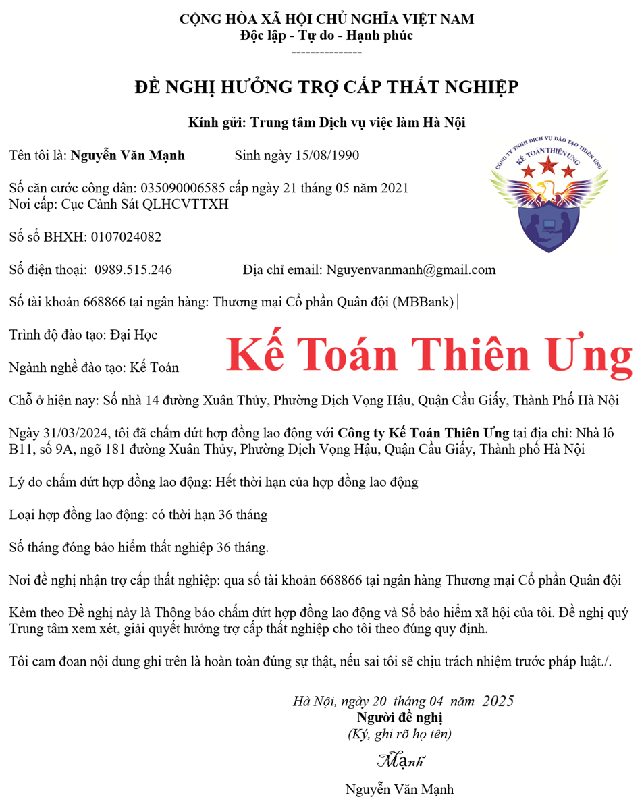

Mẫu giấy đề nghị hưởng trợ cấp thất nghiệp mới nhất năm 2025 là Mẫu số 03 ban hành kèm theo Thông tư số 15/2023/TT-BLĐTBXH
Theo Quyết định 351/QĐ-BLĐTBXH của Bộ Lao động - Thương binh và Xã hội ngày 29/03/2024 thì khi người thất nghiệp có nhu cầu hưởng trợ cấp thất nghiệp => làm hồ sơ hưởng trợ cấp thất nghiệp thì sẽ làm theo Mẫu số 03 - Đề nghị hưởng trợ cấp thất nghiệp được ban hành kèm theo Thông tư số 15/2023/TT-BLĐTBXH.
Mẫu đơn, mẫu tờ khai: Đề nghị hưởng trợ cấp thất nghiệp (Mẫu số 03 ban hành kèm theo Thông tư số 15/2023/TT-BLĐTBXH ngày 29 tháng 12 năm 2023 của Bộ trưởng Bộ Lao động – Thương binh và Xã hội
|
CỘNG HÒA XÃ HỘI CHỦ NGHĨA VIỆT NAM
Độc lập - Tự do - Hạnh phúc --------------- ĐỀ NGHỊ HƯỞNG TRỢ CẤP THẤT NGHIỆP
Kính gửi: Trung tâm Dịch vụ việc làm ……………………………
Tên tôi là: ........................................... sinh ngày…../…/…. Số định danh cá nhân/Chứng minh nhân dân: .............. cấp ngày 15 tháng 09 năm 2026 Nơi cấp: ................................. Số sổ BHXH: ........................................................ Số điện thoại: ………………………Địa chỉ email (nếu có) ................................ Số tài khoản (ATM nếu có) …………… tại ngân hàng: ................................ Trình độ đào tạo: .................................................................. Ngành nghề đào tạo: ........................................................ Chỗ ở hiện nay (trường hợp khác nơi đăng ký thường trú) (1): .......................... ........................................................................ Ngày …/…/…., tôi đã chấm dứt hợp đồng lao động/hợp đồng làm việc với (tên đơn vị)…………………………………tại địa chỉ: ……………………… Lý do chấm dứt hợp đồng lao động/hợp đồng làm việc: ................................ ............................................................................................................... Loại hợp đồng lao động/hợp đồng làm việc: ....................................... Số tháng đóng bảo hiểm thất nghiệp………………tháng. Nơi đề nghị nhận trợ cấp thất nghiệp (BHXH quận/huyện hoặc qua thẻ ATM): .............................................................................................. Kèm theo Đề nghị này là (2) ………………………… và Sổ bảo hiểm xã hội của tôi. Đề nghị quý Trung tâm xem xét, giải quyết hưởng trợ cấp thất nghiệp cho tôi theo đúng quy định. Tôi cam đoan nội dung ghi trên là hoàn toàn đúng sự thật, nếu sai tôi sẽ chịu trách nhiệm trước pháp luật./.
|
Ghi chú:
(1) Ghi rõ số nhà, đường phố, tổ, thôn, xóm, làng, ấp, bản, buôn, phum, sóc.
(2) Bản chính hoặc bản sao có chứng thực hoặc bản sao kèm theo bản chính để đối chiếu của một trong các giấy tờ xác nhận về việc chấm dứt hợp đồng lao động hoặc hợp đồng làm việc theo quy định tại khoản 6 Điều 1 Nghị định số 61/2020/NĐ-CP ngày 29/5/2020 của Chính phủ
(2) Bản chính hoặc bản sao có chứng thực hoặc bản sao kèm theo bản chính để đối chiếu của một trong các giấy tờ xác nhận về việc chấm dứt hợp đồng lao động hoặc hợp đồng làm việc theo quy định tại khoản 6 Điều 1 Nghị định số 61/2020/NĐ-CP ngày 29/5/2020 của Chính phủ
Cụ thể:
Nghị định 61/2020/NĐ-CP sửa đổi Nghị định 28/2015/NĐ-CP hướng dẫn về bảo hiểm thất nghiệp tại Luật việc làm 2013.
Điều 1. Sửa đổi, bổ sung một số điều của Nghị định số 28/2015/NĐ-CP ngày 12 tháng 3 năm 2015 của Chính phủ quy định chi tiết thi hành một số điều của Luật Việc làm về bảo hiểm thất nghiệp (sau đây viết tắt là Nghị định số 28/2015/NĐ-CP) như sau:
6. Sửa đổi, bổ sung khoản 2 Điều 16:
“2. Bản chính hoặc bản sao có chứng thực hoặc bản sao kèm theo bản chính để đối chiếu của một trong các giấy tờ sau đây xác nhận về việc chấm dứt hợp đồng lao động hoặc hợp đồng làm việc:
a) Hợp đồng lao động hoặc hợp đồng làm việc đã hết hạn hoặc đã hoàn thành công việc theo hợp đồng lao động;
b) Quyết định thôi việc;
c) Quyết định sa thải;
d) Quyết định kỷ luật buộc thôi việc;
đ) Thông báo hoặc thỏa thuận chấm dứt hợp đồng lao động hoặc hợp đồng làm việc;
e) Xác nhận của người sử dụng lao động trong đó có nội dung cụ thể về thông tin của người lao động; loại hợp đồng lao động đã ký; lý do, thời điểm chấm dứt hợp đồng lao động đối với người lao động;
g) Xác nhận của cơ quan nhà nước có thẩm quyền về việc doanh nghiệp hoặc hợp tác xã giải thể, phá sản hoặc quyết định bãi nhiệm, miễn nhiệm, cách chức đối với các chức danh được bổ nhiệm trong trường hợp người lao động là người quản lý doanh nghiệp, quản lý hợp tác xã;
h) Trường hợp người lao động không có các giấy tờ xác nhận về việc chấm dứt hợp đồng lao động do đơn vị sử dụng lao động không có người đại diện theo pháp luật và người được người đại diện theo pháp luật ủy quyền thì thực hiện theo quy trình sau:
Sở Lao động - Thương binh và Xã hội hoặc Bảo hiểm xã hội cấp tỉnh gửi văn bản yêu cầu Sở Kế hoạch và Đầu tư xác nhận đơn vị sử dụng lao động không có người đại diện theo pháp luật hoặc không có người được người đại diện theo pháp luật ủy quyền.
Sở Kế hoạch và Đầu tư có trách nhiệm phối hợp với cơ quan thuế, cơ quan công an, chính quyền địa phương nơi đơn vị sử dụng lao động đặt trụ sở chính thực hiện xác minh nội dung đơn vị sử dụng lao động không có người đại diện theo pháp luật hoặc không có người được người đại diện theo pháp luật ủy quyền.
Sở Kế hoạch và Đầu tư gửi văn bản trả lời cho Sở Lao động - Thương binh và Xã hội và Bảo hiểm xã hội cấp tỉnh về nội dung đơn vị sử dụng lao động không có người đại diện theo pháp luật hoặc không có người được người đại diện theo pháp luật ủy quyền trong thời hạn 10 ngày làm việc kể từ ngày nhận được văn bản yêu cầu xác nhận của Sở Lao động - Thương binh và Xã hội hoặc Bảo hiểm xã hội cấp tỉnh.
i) Trường hợp người lao động tham gia bảo hiểm thất nghiệp theo quy định tại điểm c khoản 1 Điều 43 Luật Việc làm thì giấy tờ xác nhận về việc chấm dứt hợp đồng lao động theo mùa vụ hoặc theo một công việc nhất định có thời hạn từ đủ 03 tháng đến dưới 12 tháng là bản chính hoặc bản sao có chứng thực hoặc bản sao kèm theo bản chính để đối chiếu của hợp đồng đó.”
Mẫu Đề nghị hưởng trợ cấp thất nghiệp đã được lập để các bạn tham khảo:
